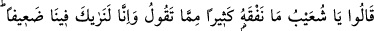
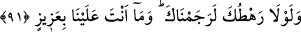
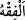
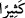

dışındaki tüm varlıkları (mâsivâ) terk edip Allah’a dönmektir. Bu makam artık mâsiyet
denen şeyin ne olduğunu unutmayı ve tevbe etmekten bile tevbe etmeyi gerektirir. Çünkü
safâ vakti cefâyı unutmayı gerektirir. Yine Hak sâliğe tecellî edip sâlik de O’nun zâtı
dışındaki her şeyin yok olduğunu gördüğü zaman bütün zâtlar fâni olur. Zâtlar yok
olursa, ameller de yok olur. Allah Teâlâ tevbeleri çokça kabul edendir. Kul çok yalancı
olmadıkça tevbesini kabul eder.
Hikâye edilir ki Mâlik b. Dinar eğlenmekte olan iki gencin yanından geçerken onlara
nasîhatte bulundu. Gençlerden birisi: “Ben aslanlardan bir aslanım.” deyince Mâlik:
“Sana bir aslan gelince onun yanında tilkiye dönersin.” dedi. Bu genç bir süre sonra
hasta oldu ve Mâlik genci ziyarete gitti. Mâlik gelince genç ağlayarak: “İşte yanında
tilkiye döndüğüm o aslan geldi.” dedi. Bunun üzerine Mâlik: “Allah’a tevbe et, çünkü O
tevbeleri hep kabul eder.” der demez evin bir köşesinden şöyle bir ses duyuldu: “Biz
bunu defalarca tecrübe edip sınadık ve onun çok yalancı biri olduğunu gördük.”
Mesnevî’de şöyle denilir:
Tevbe ederler, Allah da tevbeyi kabul eder,
O’nun buyruğunu tutarlar, O ne güzel buyruk sâhibidir
91. Dediler ki: “Ey Şuayb, söylediklerinin çoğunu anlamıyoruz ve içimizde seni
cidden zayıf görüyoruz. Eğer kabilen olmasaydı, seni mutlaka taşlayarak
öldürürdük. Sen bizden üstün değilsin.”
“Dediler ki: “Ey Şuayb, söylediklerinin çoğunu” yani bize söylediğin tevhid ve ölçü
ile tartıyı tam yapma gibi şeylerden hiçbirini “anlamıyoruz.”
Burada “
” lâfzı konuşan birinin sözlerinden ne demek istediğini kavramak
mânâsındadır. “
/ çoğu” ifadesi hiçbiri mânâsına gelmektedir. Tıpkı “Onların çoğu
sadece zanna tâbi oluyorlar.” (Yûnus, 10/53) âyetinde olduğu gibi burada da -iki
görüşten birine göre- “onların hiçbiri” demektir. Sırf Şuayb (a.s.)’ın sözüne değer
vermemiş olmak ve onu küçük görmek için böyle diyorlar. Nitekim biri, sözüne değer
vermediği bir arkadaşına “ne dediğini anlamıyorum.” der. Yoksa Şuayb (a.s.) tabîî ki
onlara kendi dilleri ile hitab ediyor, onlar da onun dediklerini anlıyorlardı. Fakat Şuayb
(a.s.) onları gerek kendilerinin, gerekse atalarının içinde bulundukları hayat tarzına ters
şeylere çağırdığı için böyle konuştular.
“ve içimizde” aramızda “seni zayıf görüyoruz.” Zayıf lâfzı meşhûr kullanıma göre
cismânî olarak güçsüz demektir. Yani senin hiçbir gücün kuvvetin yok ki, sana herhangi